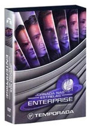
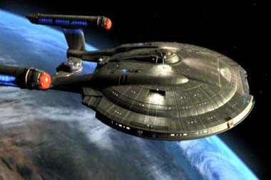
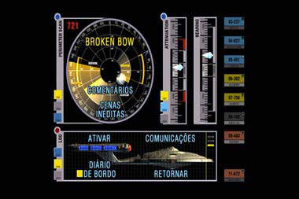
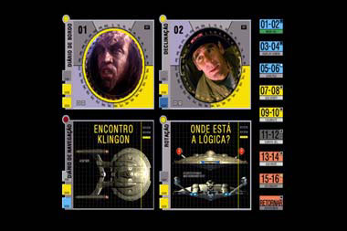
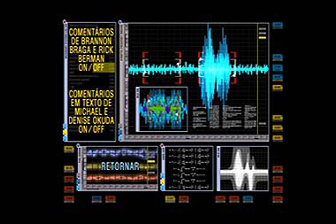
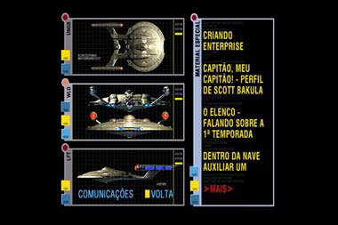
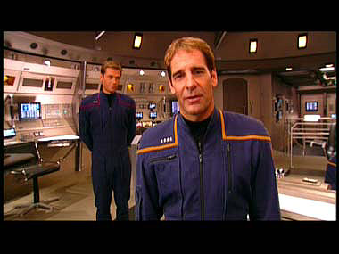
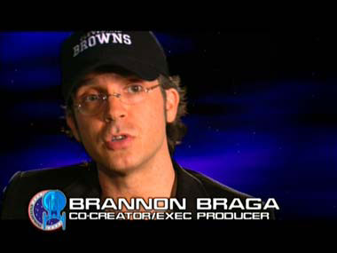

Se
você ainda não começou a ver os episódios da Série Clássica em DVD, a partir
da semana que vem você terá uma forma diferente de abordar a franquia Jornada
nas Estrelas -- é quando chega ao mercado brasileiro a
primeira temporada de Enterprise, teoricamente,
a "primeira" série no universo criado por Gene Roddenberry, ambientada no século 22.
O ano
é 2151, e a primeira nave terrestre capaz de atingir dobra cinco está pronta para
deixar a doca espacial, com uma difícil missão: entregar um sobrevivente Klingon
que caiu na Terra após ser perseguido por Sulibans,
uma raça nômade aparentemente envolvida numa Guerra Fria Temporal.
É um início intrigante para uma série de Jornada
nas Estrelas, que acabou se mostrando morna demais e deu fim a 18 anos de
produção ininterrupta da franquia. Ainda assim, vale a pena conferir, pois Enterprise tem algumas coisas que nenhuma das outras
séries da marca tem. Os primeiros episódios fogem um pouco do esquema natural
de Jornada e exploram mais o fato de que esses tripulantes são legítimos
astronautas -- algo que passa despercebido nos outros programas e filmes que compõem
a saga.
Mais uma vez, o Trek Brasilis
conseguiu pôr as mãos nos discos produzidos para o mercado brasileiro, e traz
em primeira mão suas impressões do que o fã pode esperar deste lançamento arrojado
da Paramount Pictures no país. Pode-se dizer arrojado
porque trata-se de um lançamento feito apenas para o
mercado brasileiro, mas não para toda a América Latina -- haja vista que os discos
têm apenas duas opções para os menus, Inglês e Português.
São
sete discos, contendo os 26 episódios da primeira temporada, mais um bocado de
extras. Um dos elementos mais interessantes do pacote sem dúvida é o conjunto
de "cenas cortadas" dos segmentos. Em vez de serem incluídos como extras,
eles estão junto a seus respectivos episódios. Elas não foram reeditadas no episódio
-- muitas delas ainda estão incompletas, sem efeitos especiais ou uma mixagem
de som mais apropriada --, mas oferecem lampejos de alguns "momentos"
dos personagens que precisaram ser cortados por conta do tempo do episódio. Se
cada segmento da Série Clássica podia esbanjar 51 minutos, Enterprise
foi reduzida a 44 minutos por episódio.
Para uma avaliação mais detalhada de cada segmento, confira
o nosso Guia de Episódios. Vamos então a uma
análise técnica do conteúdo.
Os
menus
Mais uma vez, a Paramount
capricha nos menus dos episódios. O disco abre com uma cena da NX-01 deixando
a doca espacial -- não é a mesma do piloto "Broken
Bow", mas claramente uma nova renderização.
Depois que ela passa, entra um menu muito similar aos
gráficos vistos na ponte da nave, criados por Michael Okuda.
É aí que o telespectador pode escolher o episódio que quer ver -- os segmentos
tiveram os nomes traduzidos --, ou, no sétimo disco, chamar o menu dos extras.



Imagem
dos episódios
A qualidade de
imagem é a melhor possível e faz jus aos valores de produção da série. Você nunca
verá os espetaculares efeitos especiais de Enterprise
numa apresentação melhor do que esta. Os episódios estão todos em formato anamórfico
em widescreen, como originalmente produzidos (e diferente
da forma em que são exibidos no Brasil pelo canal AXN). Os extras são todos em
tela cheia, o padrão tradicional de televisão.
Áudio
dos episódios
Embora não seja
surpreendente, uma vez que nenhuma emissora de TV nacional se arriscou a encomendar
uma dublagem de Enterprise, é triste que esse pacote não disponha da
possibilidade de ver os segmentos falados em português. A única trilha
de som disponível é em inglês, com qualidade Dolby 5.1
-- exceto para "Broken Bow" (veja abaixo).
Comentários
Para
o piloto "Broken Bow", os criadores Rick
Berman e Brannon Braga gravaram uma trilha de comentário em
áudio sobre o episódio e sobre o que pensavam enquanto concebiam a série. É interessante
ver os argumentos dos dois, especialmente em situações críticas, como a escolha
de fazer a polêmica cena da "descontaminação".
Também há comentários de texto por Michael e Denise Okuda,
em "Broken Bow",
"The Andorian Incident" e "Vox
Sola".

Extras
Os fãs, como sempre, chegam babando por este material,
concentrado no último disco. Os documentários incluídos no pacote (a versão brasileira
inclui um segmento a mais que a americana, sobre convenções de Jornada nas
Estrelas) são em geral bons e atendem aos espectadores interessados. Mas há
problemas. É surpreendente que uma série que, cronologicamente, antecede todas as outras (e portanto precisa levar em conta
tudo que veio antes) tenha documentários com tão poucas referências ao resto da
franquia. Mas vamos a uma análise do conteúdo.

Criando Enterprise
(12 minutos)

Depois de uma abertura engraçadinha, em que Scott Bakula
(Jonathan Archer) apresenta sua tripulação e o elenco da série, temos alguns insights sobre o processo de criação do conceito e do visual
de Enterprise. Não apresenta surpresas com relação
ao que já foi divulgado na internet durante a concepção da série.
Oh Capitão! Meu Capitão! Um perfil de Scott Bakula (10 minutos)
Rasgação de seda para Scott Bakula, o protagonista
da série. É decepcionante que tão pouco seja dito sobre a carreira pregressa do
ator. Passei o segmento inteiro esperando uma cena de Quantum Leap. Ela nunca veio.
Impressões
do Elenco: Primeira Temporada (12 minutos)
Definitivamente
um segmento interessante, em que os atores fixos da série comentam seus momentos
favoritos no primeiro ano.
Dentro
da Nave Auxiliar Um (8 minutos)
Um pequeno documentário totalmente dedicado ao episódio
"Shuttlepod One", que começou
como um conceito para economizar no orçamento e acabou como um dos segmentos mais
bem-sucedidos da temporada, e um dos favoritos de Rick Berman em toda a história da
franquia. É uma visão interessante de como funciona o orçamento numa série de
TV e o que se pode fazer para mitigar as dificuldades financeiras ao longo da
temporada.
Viagem no Tempo em Jornada
nas Estrelas: Guerras Frias Temporais e Além (8 minutos)

Ele começa interessante, e Brannon Braga até faz uma
revelação: admite que o conceito da Guerra Fria Temporal foi uma exigência do
estúdio de que houvesse um elemento "futurista" na série. Mas logo o
segmento desbanca para uma desinteressante seqüência de imagens congeladas elencando os principais episódios de viagens no tempo na história
de Jornada nas Estrelas. É um documentário com uma premissa tão boa e como
uma execução tão pobre quanto a do conceito da Guerra
Fria Temporal em Enterprise...
Segredos
de Enterprise (2 minutos)
Bem interessante, mas curto demais, este segmento mostra
como funcionam as luzes do reator de dobra da engenharia e o replicador de alimentos,
do ponto de vista dos bastidores. Você nunca mais verá a tecnologia high-tech da NX-01 da mesma maneira...
Almirante
Forrest no Centro do Palco (5 minutos)
Um pequeno documentário sobre Vaughn
Armstrong, ator que mais papéis fez na história da franquia. e
sobre como ele conseguiu seu papel recorrente em Enterprise.
Novamente, uma boa oportunidade desperdiçada para mostrar clipes
de todos os papéis (e séries).
Celebrando
Jornada nas Estrelas
Um segmento
que mostra o fenômeno das convenções e o fanatismo de alguns fãs. Inclui um casamento
realizado na ponte da Enterprise-D, no Star Trek Experience,
em
Las Vegas.
Easter
Eggs e Merchandising
Há
três "Easter Eggs" escondidos nos menus de extras do sétimo disco.
Todos são bem agradáveis, curtos, e falam de determinados episódios da temporada.
Há também dois trailers, um da nova atração do Star Trek Experience, em
Las Vegas, e outro da Série Clássica
em DVD (o mesmo que estava no site da Paramount no Brasil).